Parametric equations for nine curves are defined by combining the row and column headings in the table below. The domain of t for each curve is the set of values of t for which the x and y coordinates are defined.
Sketches of some of these curves are available on cards. Place each sketch in the cell with the appropriate row and column headings for the parametric equations of the curve and sketch the missing curves.
As you look along the rows or down the columns in the table, what features of the curves stay the same and which change? Explain how this is related to the parametric equations of the curves.
I notice that curves E and F look like graphs I’m familiar with, whereas the others don’t. Curve F looks like a sine wave and E looks like y=1x or xy=1. I’ll put these to one side.
Curves C, D and A only have x-values between a restricted range (the x-axis extends beyond these curves). This distinguishes them from B and G. Looking at the y-values, I notice that curves D and B don’t have negative y-values whereas all the others do.
Now I notice E and F both have negative y-values and E has a restricted range of x-values.
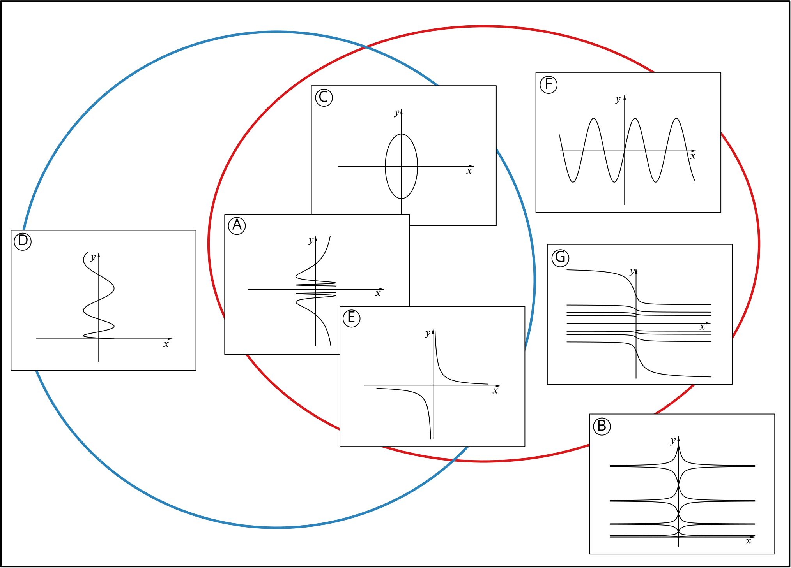
Grouping the cards this way has helped me to see other shared features. For example, C and F have a restricted range of y-values and A, E and G all have a ‘gap’ in their y-values.
I can use the possible values of x and y for the curve to sketch region(s) of the xy-plane that the curve must lie within. For example, the curve with equations x=2t, y=2sint for t∈ℝ must lie in the region bordered by y=−2 and y=2. I need to be careful about the domain of t for the curves, especially for the bottom row and right-hand column. I’ve marked where the boundary of one region meets the axes. Will this be helpful for others?
x=cost
t∈ℝ
x=2t
t∈ℝ
x=tant
−4π≤t≤4πt≠±π2,±3π2,±5π2,±7π2
y=2sint
t∈ℝ
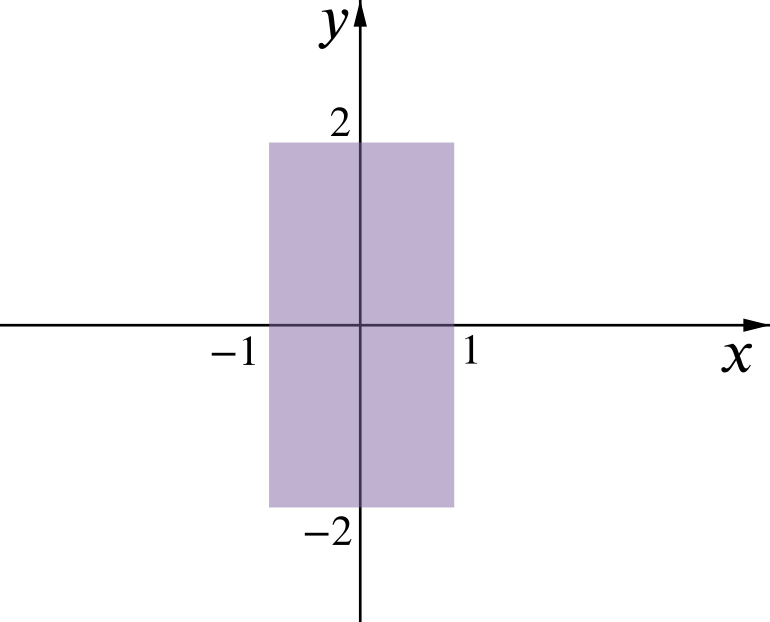
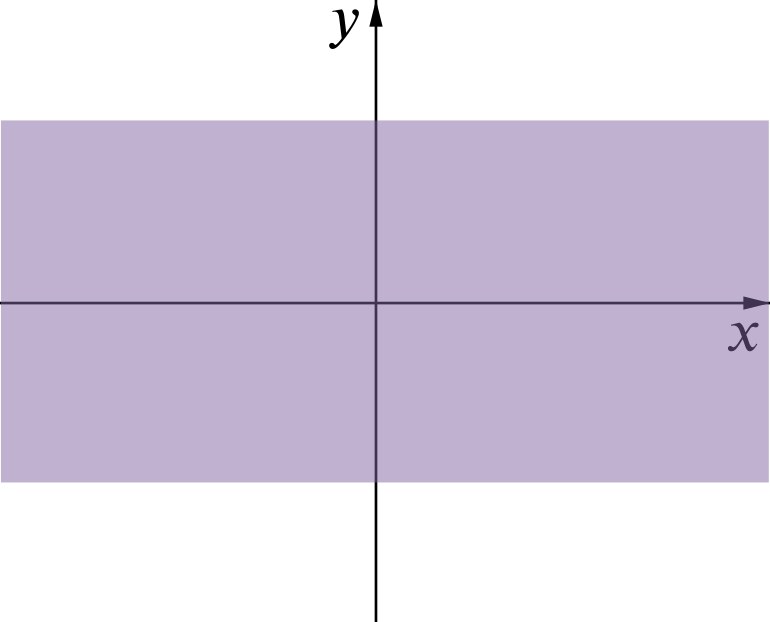
y=t2
t∈ℝ
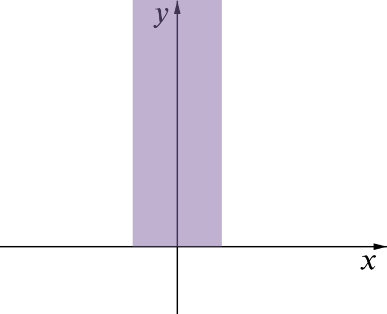
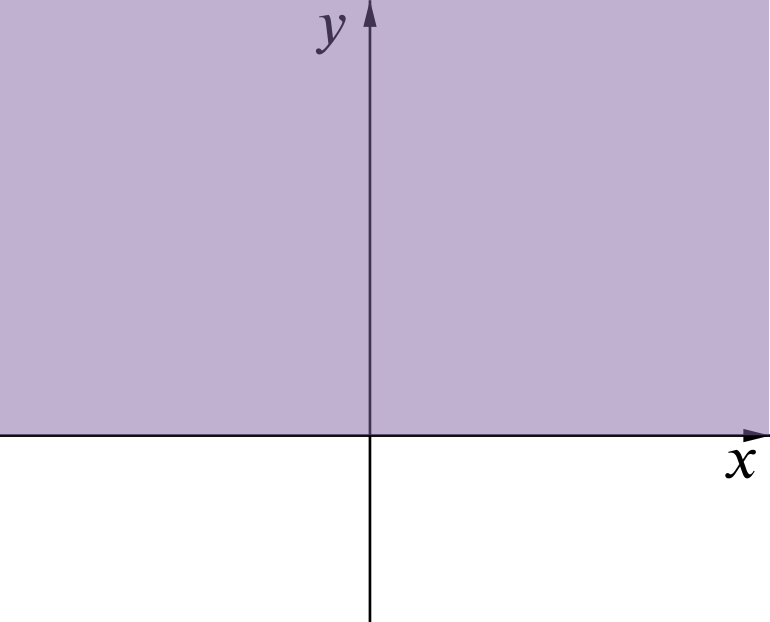
y=2t
−4π≤t≤4π and t≠0
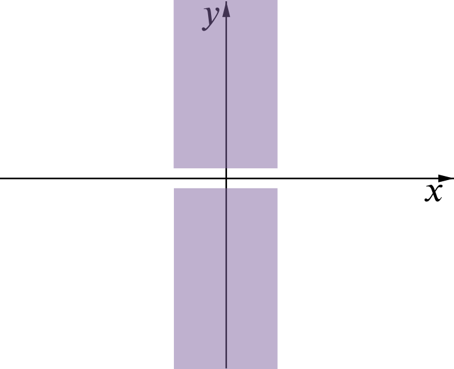
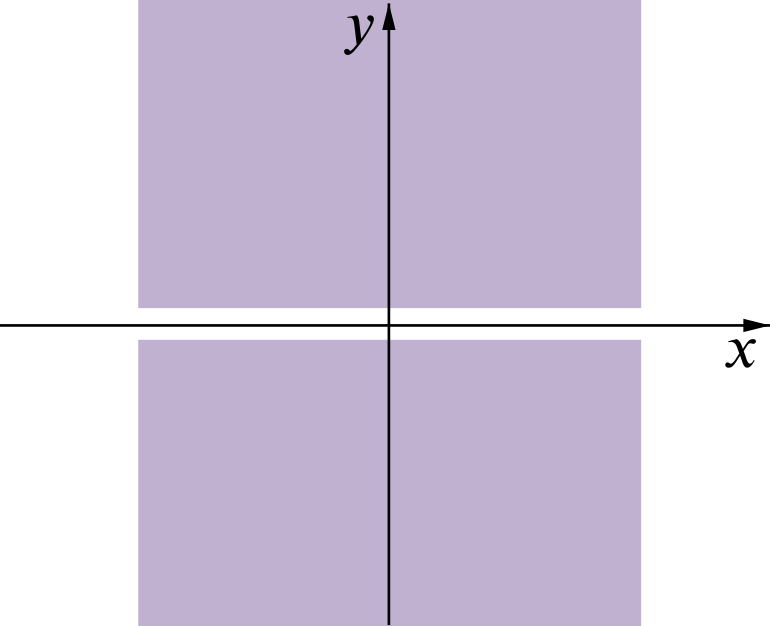
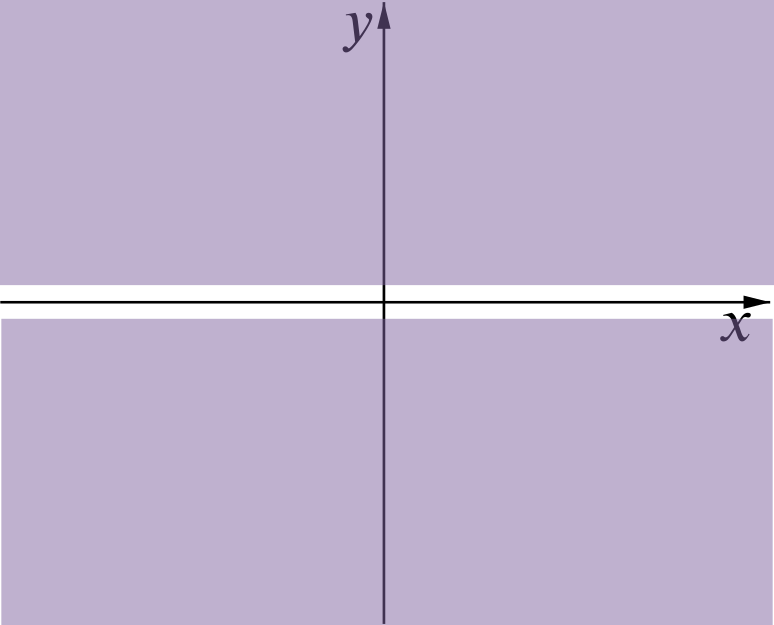
I now see that the curve in the top left cell is likely to be C and curve F could fit in either of the other cells in the top row. In the second row, D could fit in the left-hand cell and B could fit in either of the others. In the third row, A and E could both fit in the left or middle cells and G fits in the right-hand cell.
Curves C, D and G can only fit in one cell, but can I see more to connect them with their parametric equations? This may also help me decide where the other curves fit.
Curve C is the only closed curve among the graphs given (it’s an ellipse, which I can think of as a circle stretched parallel to the y-axis). How is this related to the parametric equations?
For the other curves in the top row, the y-values must oscillate between −2 and 2 but the x-values will behave very differently as t varies. If x=2t then I expect the curve to look like a sine wave, so F fits in the middle cell. I need to sketch the curve in the top right cell.
For the other cells where x=2t, the curve with y=t2 must be like a y=x2 graph (so I’ll need to sketch it) and the curve with y=2t must be E. What are their Cartesian equations?
Looking back at the first column, the x-coordinate must behave like a cosine wave, but the rate of oscillations will vary. If y=t2 then as t increases, y-increases more and more rapidly. How does this relate to the behaviour of curve D?
As E has now been placed in a cell, curve A must have equations x=cost, y=2t. But how else could I know that this is the case?
What if I substitute t=π? What if I choose t=−π instead, or other values of t?
As t increases, how does y change? When is it changing more rapidly or less rapidly?
How will the graph change if the domain is extended?
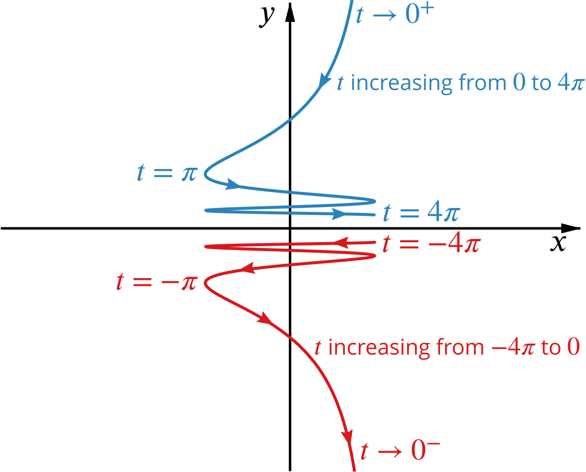
To connect curves B and G with their parametric equations it may help to trace them out. The highlighted parts show how the curves are traced out as t increases from −5π2 to −3π2 and from 3π2 to 5π2. What happens for other parts of the domain of t?
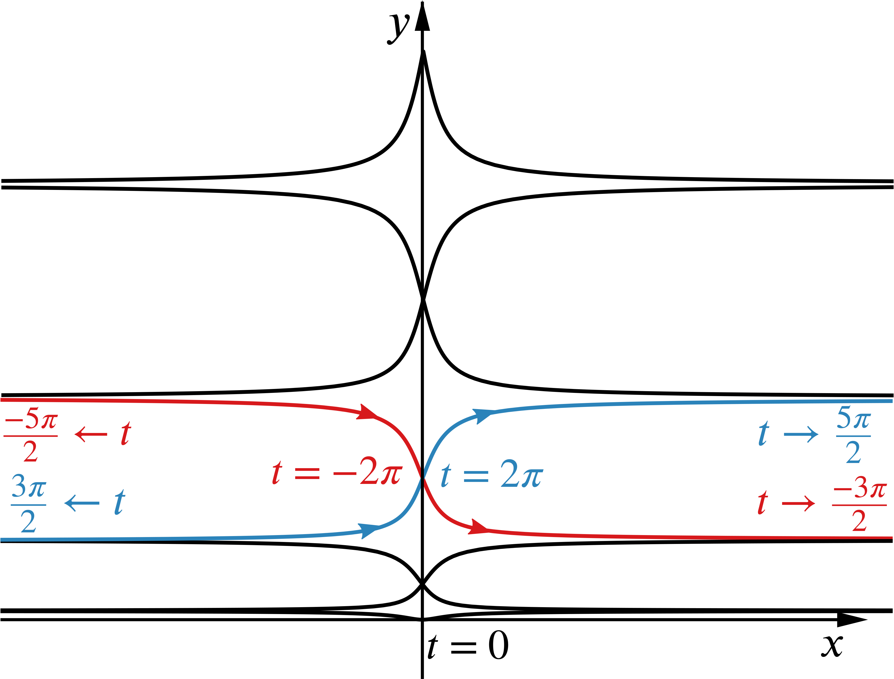
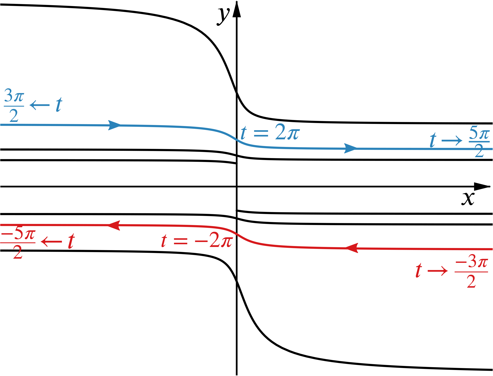
I expect the curve in the middle column to be a transformation of y=x2, since x=2t. What is a Cartesian equation for this curve?
The parametric equations for the curve in the top right cell both involve periodic functions. This was also the case for the top left cell, but the behaviour of tant suggests that I won’t get a closed curve like C. I’ll think about what happens from −π2 to π2, and then from π2 to 3π2. Why is this enough to show the whole curve?
When t=0 (or any multiple of π) x=0 and y=0. As t increases from 0 to π2, y increases to 2 and x increases to ∞ so the curve flattens out to a horizontal asymptote y=2. Similarly as t increases from −π2 to 0, x increases from −∞ to 0 and and y increases from −2 to 0. From the symmetry of the functions, the curve for −π2<t<π2 will have rotational symmetry about (0,0).
I now have one continuous section of the curve. Using the symmetry of sint and tant I can sketch another continuous section for π2<t<3π2.
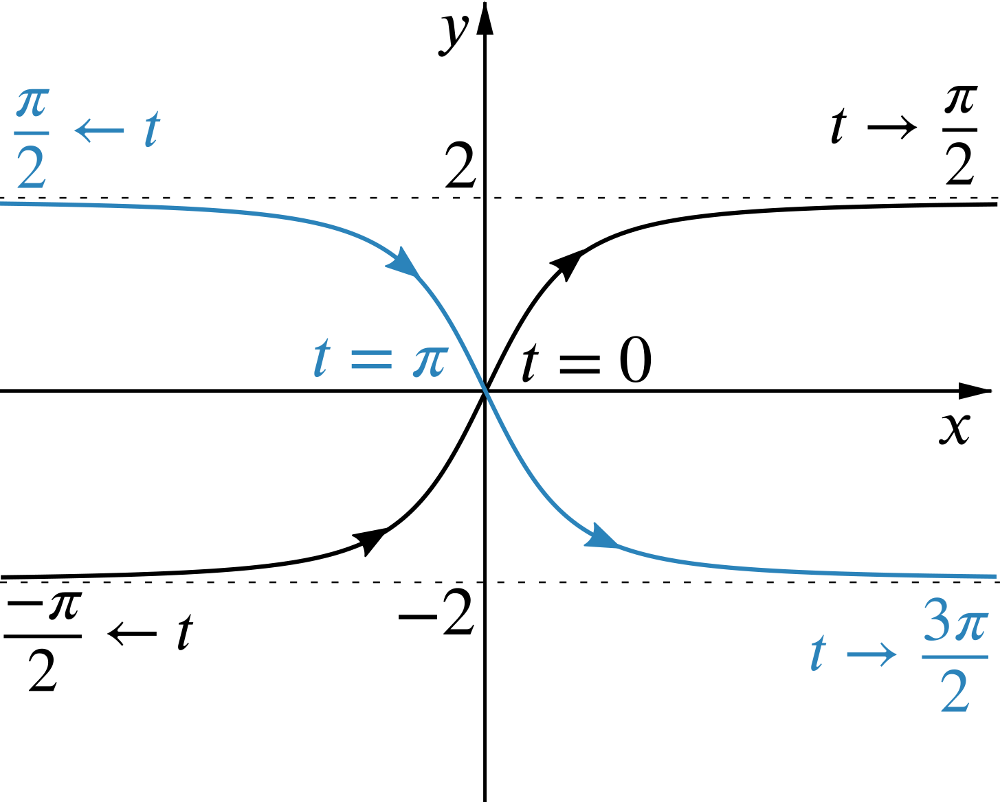
The shapes of graphs of sint and tant suggest the curve is steepest as it passes through the origin, but I can also think about dydt and dxdt or use the chain rule to obtain dydx. Does this confirm the shape of the curve I’ve sketched?
All the functions here were either odd or even, so we were able to use symmetry as a way to look at these curves. For more general parametric equations, we can think about the ranges of x- and y-values, find coordinates of points for specific values of t, and think about how a point on the curve moves as t increases. In some cases, eliminating t and working with a Cartesian equation can be helpful.